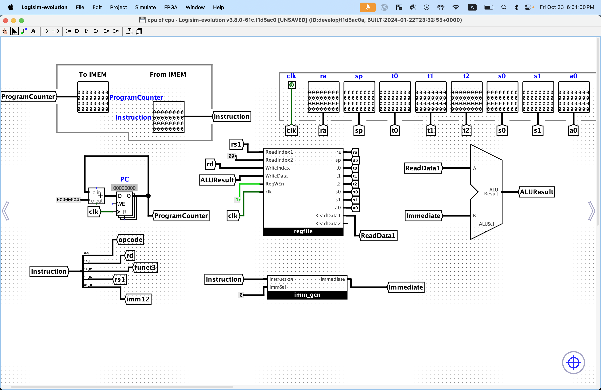
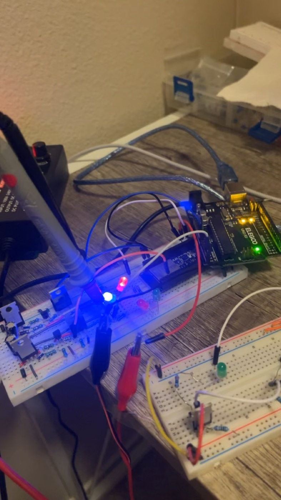

From low-power radar at Berkeley Lab to the software behind a growing startup. A closer look at what I build, how it works, and what I’m learning.
01 / LAWRENCE BERKELEY NATIONAL LABORATORY
Signals into insight.
Atmospheric radar research, from embedded control and signal processing to hardware integration and field testing.
LBNL / HARDWARE INTEGRATIONFROM BENCH TO FIELD ↗
JAN 2026 — PRESENT
Lawrence Berkeley National Laboratory
Undergraduate Research Assistant / Electrical Engineer Intern
Developing embedded Linux software, radar control, and signal processing for a distributed atmospheric sensing network. Built remote deployment platforms with scheduled power control, UART configuration, and watchdog recovery.
Two 10-week full-time internships, with continued undergraduate research between and after them. Mentor: Stijn Wielandt
FIELD DEPLOYMENT · JORNADA EXPERIMENTAL RANGE
01 / RESEARCH · BERKELEY LAB
Making automotive radar see the atmosphere.
Adapting TI’s 77–81 GHz mmWave radar for atmospheric boundary-layer observations through embedded control, DSP configuration, and weak-target signal processing.
Coursework includes computer architecture, circuits, electromagnetics, data structures, and discrete mathematics & probability. Verilog coursework in progress.
Projects & exploration

COMPUTER ARCHITECTURE · IN PROGRESS
32-bit RISC-V CPU
Developing a 32-bit processor in Logisim-evolution, bringing together the ALU, register file, immediate generator, control logic, branch comparison, and load/store blocks.
Logisim-evolution32-bit datapathRISC-V
INERTIAL ELECTROSTATIC CONFINEMENT
EXPERIMENTAL PHYSICS · IN PROGRESS
IEC plasma confinement
An experimental IEC fusion device project, integrating a vacuum chamber, electrode geometry, and a dual-stage pumping system.
Vacuum systemsExperimental physics
ACADEMIC FOUNDATION
Coursework & technical skills
Connecting the mathematics, circuits, and software behind complete engineering systems.
Computer architecture
CS61C studies · RISC-V instruction sets, datapaths, ALU design, and register files.
Circuits & electromagnetics
Circuit analysis and the electrical principles behind hardware and electromagnetic systems.
Data structures & mathematics
Data structures, discrete mathematics, and probability as foundations for software and analytical problem solving.
Digital design
Verilog coursework in progress, alongside circuit-level CPU development in Logisim-evolution.
ADDITIONAL ENGINEERING WORK
Power electronics

H–BRIDGE / BIPOLAR OUTPUT
02 / POWER ELECTRONICS · 2025
DC-to-AC inverter
A discrete complementary-MOSFET H-bridge developed from a four-capacitor prototype into a two-capacitor gate-drive topology.
MOSFETsGate driversIRF7205 / IRFZ44N
RADAR HARDWARE INTEGRATION.
04 / THE PERSON BEHIND THE PROJECTS
Learning by building things.
I’m interested in how hardware and software work together—from the electronics inside a radar enclosure to the code that controls it and processes its data.
At Berkeley, I’m building on that interest through my EECS studies and projects. My time at LBNL and Bytes has given me different ways to apply what I’m learning. I’m especially interested in embedded systems, wireless/RF, and digital IC design.